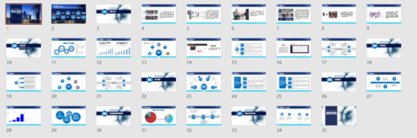

project collections: National Innovation and Entrepreneurship Training - Cross-Domain ReID
National Innovation and Entrepreneurship Training - Cross-Domain Pedestrian Re-identification Project
Research Background and Significance
What is Re-ID?
Is the use of Computer Vision technology to determine whether there is a specific pedestrian in the image or video sequence technology.
Its application scenarios include: intelligent security, intelligent business - unmanned supermarket, human-machine interaction, album Clustering, etc
“Baby Home”, the largest unofficial website for searching for children in China, has 710 pages of “search posts” on its forums, with flagged posts showing that 14,185 boys and 6,938 girls are still missing. On the CCTV official search platform, it shows that 315,588 search messages are pending, the main type of which is family search.
If not AI In the face of surveillance video, it takes a lot of energy to find people. In the case of an old man who got lost not long ago, “If it weren’t for AI, we would need to check nearly 300 cameras to find the whereabouts of the old man. Suppose we check 10 hours of video every day, 3,000 hours of video data, and watch it for 150 consecutive days without eating or sleeping. But through the video structure system, this work is shortened to a few minutes, which buys time and labor costs for the search.”
AI There have been many success stories, but Prior Art relies heavily on facial recognition.
Due to the wide range of viewing angles and long distances, most ordinary security surveillance cameras cannot obtain images that meet the facial recognition resolution. The factors affecting recognition include lighting, posture, occlusion, etc., among which clarity is a key element of facial recognition accuracy. AI Factors affecting recognition include illumination, posture, occlusion, etc.
A technical method that can simultaneously find all target leads at one time through various attributes such as face, human body, clothing, state, and environmental characteristics is needed to speed up the search for efficiency.
Related work and issues
Existing pedestrian re-identification techniques have made great progress in single-domain pedestrian re-identification (ReID) recently, but there are great difficulties in cross-domain (cross domain, or transfer) problems.
If the trained model is directly used for target domain testing, the performance will be greatly reduced. For example, the current model with an F1-score of up to 95% on Market1501 is directly used for non-homologous tasks, such as DukeMTMC-reid, and Top1 is often less than 40%. This problem is especially serious considering the relatively small dataset and single scenario in the ReID domain.
Therefore, this Research aims to solve this problem by improving the TransReID model, using the encoder in transformer to obtain the relevant features of the image, and using the decoder to perform cross-domain fusion. In order to achieve transfer learning ability. The final test results show that the accuracy data reaches a high level of existing cross-domain pedestrian re-identification. Although it is not obvious due to the existing state-of-the-art method, the value is relatively close.
The main innovations and contributions of this article
Research content innovation: Accurately captured the characteristics of the current pedestrian re-identification in the cross-domain field with low effect, a wide corresponding technology app store and large demand potential, turned the traditional single-domain accuracy to a more practical cross-domain situation, and effectively solved the problem of rapid decline in model accuracy.
Dataset innovation: Most of the existing datasets mostly exist on campus and cannot be well migrated to social scenes. The idealized dataset we hope to obtain should include: more pedestrians and cameras, more complex scenes, and a wider time span. However, the existing datasets lack data collection for such situations. We have produced a new dataset domain belonging to Tongji University Jiading Campus and labeled it with certain personal use value.
Improvement and innovation of advanced methods: combined with the current popular transformer framework, TransReID, a single-domain SOTA method, is combined with transfer learning combined to innovate cross-domain pedestrian re-identification. And by changing the attention mechanism, the feature fusion of multiple domains is used as the attention target, so as to have better model effect
Research Process
Phase 1
The topic was determined, the model was initially explored, and the first stage of dataset production was completed.
Phase 2
Determine the basic model - Transformer network; compare ResNet, D-MMD, transGan, Transformer horizontally; reproduce and evaluate their corresponding strengths and weaknesses.
Phase 3
Improve the Transformer network structure on the basic model. Complete the third-stage dataset collection process, participate in the Internet + competition and win the gold medal in the final of the Tongji school competition
Phase 4
Further improve the Transformer network structure. Complete the fourth stage dataset collection process; complete the writing of the full paper and the realization of the final result
Follow-up outlook
Enrich the model and explore the subsequent business value of the model
Research content and results
Improve Sota ReID - Build a new TransReId model
The Sota ReID model proposed by Alibaba Research Institute and Zhejiang University can perform well on a single domain, but not on a cross-domain basis. Therefore, we improve the TransReId model to focus on the image cross-focus between the two domains and use identity preservation and feature exchange to fuse the information of the two domains.
Feature extraction
For an input image, the model first divides it into blocks of fixed size. For each block, a linear operation is used to map it to the D dimension. It should be noted that instead of simply cutting the image directly, there are overlapping Patches. This is because in the pure transformer model (eg ViT, DeiT), the image is segmented into non-overlapping Patches, thus losing the local adjacent structures around them.
Measurement method
The model uses ID loss combined with triple loss.
ID loss is the loss caused by the classification, the obtained features through a classifier, the classification is correct using cross-heir calculation.
The triplet loss is to directly use the global feature representation obtained by the last layer of transformer to calculate whether the difference between the distance between the positive sample pair and the distance between the negative sample pair is greater than the predetermined scale.
ID losses:
Triple loss:
Method Improvement - Focus on the image cross-over between the two domains, and use identity preservation and feature exchange to fuse the images of the two domains
Referring to the relevant ideas in TransReId, we focus on the image cross-over between the two domains, use identity preservation, feature exchange to fuse the images of the two domains, and exchange again to measure cross-domain consistency.
In our improved model, the encoder in transformer is used to obtain the relevant features of the image, and the decoder is used for cross-domain fusion. Specifically, the encoder and image preprocessing are the same as in TransReID; the decoder is the image generator. The images of the two domains pay attention to each other, and the idea is consistent with transfer learning is to use the source domain to learn the target domain.
In view of transformer’s excellent performance ability in cross-modal related fields, its cross-domain process will also become its advantage
Schematic diagram of key ideas:
Collect pedestrian re-identification dataset on Tongji University campus
Since there are relatively few existing datasets dealing with cross-domain problems, we plan to create a cross-domain pedestrian enrichment dataset based on the Tongji University domain at Tongji University:
• We shot the pedestrian re-identification dataset at multiple points in Tongji University, and the shooting locations in spring included: Tongji University Boys Apartment (No. 7 Dormitory Building), Tongji University Jiading Street (1 and 2 gates of the large cafeteria), Tongji University Library (lobby on the first floor, library entrance and exit), Tongji University Teaching Building (corridor on the first floor of Building A, main entrance and exit of Building A).
• We shot the pedestrian re-identification dataset in four seasonal time periods (April, June, September, December), summer, autumn, and winter respectively. The total shooting time in each season is 40 hours (10 hours per location), totaling 160 hours of video data (totaling 158 GB of video). After manual labeling + Machine Learning Labeling processing, we successfully edited tens of thousands of samples of labeled data.
Display of partial sampling points: Site sampling record point 3 – Library of Tongji University：
Make a pedestrian re-identification dataset on Tongji University campus
Use the professional pedestrian re-identification and labeling software - DarkLabel1.3_part1 to label the dataset:
A total of more than 160h of recording time was successfully collected and captured data sets of thousands of students in Tongji University-Jiading campus area.
Dataset introduction:
- Processed data: The processed data set information is shown in the figure above. Each picture is the outline of the pedestrian successfully intercepted, and each picture is composed of person_id, location_id, image_id triples.
2.Original data source: The original data source is the original video stream data, the user class according to the original video stream to capture more pedestrian movements, modality and other information to process.
Considering information security and privacy, only Partial Dataset Sample is set to Shared here for viewing dataset quality and information.
Experimental results
First, we use the two most common datasets Market-1501 and Duke’s Pedestrian Enrichment Domain datasets to observe the results of cross-domain pedestrian re-identification on the image relational domain, respectively, using Rank-1, Rank-5, Rank-10, and MAP
Indicator introduction
rank-n
The probability that the top n graphs in the search results (with the highest Confidence Level) have the correct result.
For example: lable is m1, search in 100 samples.
If the recognition result is m1, m2, m3, m4, m5…, then the correct rate of rank-1 is 100%; the correct rate of rank-2 is also 100%; the correct rate of rank-5 is also 100%;
If the recognition result is m2, m1, m3, m4, m5…, then the correct rate of rank-1 is 0%, the correct rate of rank-2 is 100%, and the correct rate of rank-5 is also 100%.
If the recognition result is m2, m3, m4, m5, m1…, then the correct rate of rank-1 is 0%, the correct rate of rank-2 is 0%, and the correct rate of rank-5 is 100%.
When there are many sets of faces to be recognized, the average value is taken.
mAP
PR area under the curve (PR curve: precision and recall for all samples plotted in the graph)
For example: query-id = 1, query-cam = 1, gallery has a total of 5 pictures, calculate recall and precision according to the following figure, take recall as abscissa, precision as ordinate, draw PR Curve, the area below the curve is AP, when more than one person needs to be retrieved, take the average mAP of all people at this time.
There are many ways to calculate the area under the curve, such as ap = ap + (recall - old_recall) * ((old_precision + precision)/2);
AP measures how good the learned model is on a single category, mAP measures how good the learned model is on all categories
Traditional experimental results
First, we use the two most common datasets Market-1501 and Duke’s pedestrian enrichment datasets to observe the research results of cross-domain pedestrian re-identification on the image relational domain respectively:
Comparison of experimental results:
| Method | M >D | D > M | ||||||
|---|---|---|---|---|---|---|---|---|
| mAP | R1 | R5 | R10 | mAP | R1 | R5 | R10 | |
| UDAt | 54.4· | 72.7 | 82.1 | 85.6 | 56.5 | 78.4 | 86.5 | 89.5 |
| UDAt Ten GAN | 60.4 | 76.3 | 85.8 | 84.4 | 70.5 | 85.8 | 93.2 | 95.1 |
| UDAt + CAMS+ IMSLoss | 60.2 | 76.9 | 84 | 86.7 | 69.3 | 85.4 | 92.8 | 94.8 |
| UDAt十GAN + IMSLoss | 60.2 | 75.9 | 85.9 | 88.8 | 72.4 | 86.9 | 92.9 | 95.1 |
| DCML (KNN ) | 63.3 | 79.1 | 87.2 | 89.4 | 73.6 | 87.9 | 95.0 | 96.7 |
| DCML (Prototype ) | 63.5 | 79.3 | 86.7 | 89.5 | 73.4 | 88.2 | 94.9 | 96.4 |
| Ours | 63.8 | 78.9 | 87.8 | 90.4 | 68.7 | 84.1 | 92.2 | 94.7 |
The accuracy rate of the data reaches the current high level of cross-domain pedestrian re-identification. Although it is not obvious due to the existing state-of-the-art method, the value is relatively close.
Secondly, we carry out additional tests on the cross-domain pedestrian enrichment dataset of Tongji University. The experimental results show that the dataset under the Tongji University domain has similar statistical results to other datasets, thus proving the usability of the dataset.
Project Results
- Participated in the 7th China International “Internet +” College Students Innovation and Entrepreneurship Competition and won the gold medal in the school finals

- Participated in the 7th “Excellence Cup” and the 13th “Challenge Cup” Chinese College Students Entrepreneurship Plan Competition of Tongji University
- As an excellent project, publish the 2021-2022 Innovation and Entrepreneurship Project Exhibition Board
References
[1] He, S., Luo, H., Wang, P., Wang, F., Li, H., & Jiang, W. (2021). Transreid: Transformer-based object re-identification. arXiv preprint arXiv:2102.04378.
[2] Xu, T., Chen, W., Wang, P., Wang, F., Li, H., & Jin, R. (2021). Cdtrans: Cross-domain transformer for unsupervised domain adaptation. arXiv preprint arXiv:2109.06165.
[3] Verma, A., Subramanyam, A. V., Wang, Z., Satoh, S. I., & Shah, R. R. (2021). Unsupervised Domain Adaptation for Person Re-identification via Individual-preserving and Environmental-switching Cyclic Generation. IEEE Transactions on Multimedia.
[4] Zou, Y., Yang, X., Yu, Z., Kumar, B. V., & Kautz, J. (2020). Joint disentangling and adaptation for cross-domain person re-identification. In Computer Vision–ECCV 2020: 16th European Conference, Glasgow, UK, August 23–28, 2020, Proceedings, Part II 16 (pp. 87-104). Springer International Publishing.
[5] Wu, K., Peng, H., Chen, M., Fu, J., & Chao, H. (2021). Rethinking and improving relative position encoding for vision transformer. In Proceedings of the IEEE/CVF International Conference on Computer Vision (pp. 10033-10041).
[6] Yutian Lin, Liang Zheng , Zhedong Zheng, Yu Wu, Zhilan Hu, Chenggang Yan, Yi Yang:Improving person re-identification by attribute and identity learning. Pattern Recognit. 95: 151-161 (2019)
[7] Guangyi Chen, Yuhao Lu, Jiwen Lu, Jie Zhou:Deep Credible Metric Learning for Unsupervised Domain Adaptation Person Re-identification. ECCV (8) 2020: 643-659
[8] Jianing Li, Shiliang Zhang:Joint Visual and Temporal Consistency for Unsupervised Domain Adaptive Person Re-identification. ECCV (24) 2020: 483-499
[9] Djebril Mekhazni, Amran Bhuiyan, George S. Eskander Ekladious, Eric Granger:Unsupervised Domain Adaptation in the Dissimilarity Space for Person Re-identification. ECCV (27) 2020: 159-174